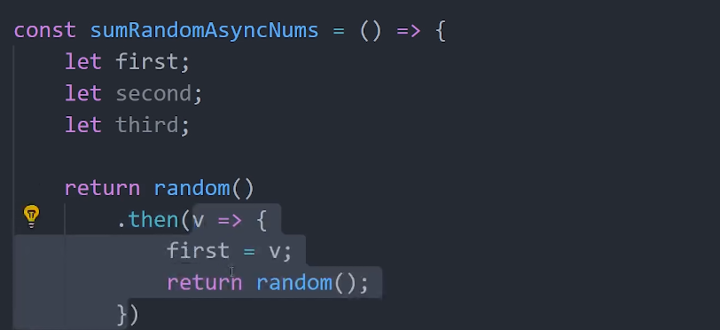
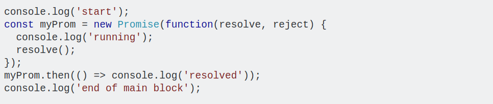
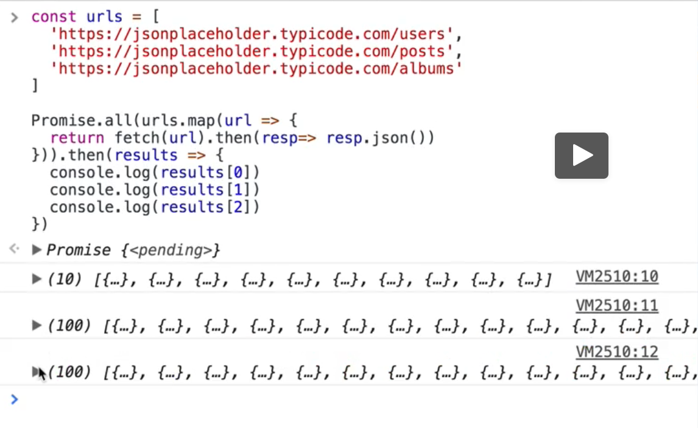

Index
BETTER JAVASCRIPT
looping in javascritpt

spread operator

async-wait: makes asynchronous code(promises) look synchronous .

Explain AJAX ?
> It stands for ASYNCHRONOUS JAVASCRIPT AND XML which is a group of technology to facilitate javascript program to request data after it finishes its complete execution .
> It is used to make request which could take long time, but without blocking the normal program execution.
> Request communication happens with the help of xml or json file. JSON.stringify() by sender and JSON.parse() by receiver
> It is achieved using v8 WebAPI like DOM events functions, setTmeout(), xhr( XMLHttpReques() ) , fetch() and so on are asynchronous functions.
> when you make fetch(url), it will return something called promise which is accessed using .then(response => response.json() ) clause.
The reply is named promise because it promises to return some data after sometime in the future but doesn't specify when. Promise returns the response after completely executing
code inside its callback function.
Sometimes promise is said to be broken(rejected) if it fails to return any value or returns errror which can be due to technical problems in network, or server.
response.json() comes with fetch() which is equivalent to JSON.parse(response).
> it's like accessing promise{
response {
data: “ ”
}
}
}
> Promises can be in three state. a) pending b) filled c) rejected.
> Why promise came into the picture ?
------ > In development work, Every developers come accross scenerio / condition like IF THIS HAPPENS THEN DO THIS THEN AGAIN IF THIS HAPPENS THEN DO THIS and so on which is very common.
To implement this, they uses two approaches before a) nested if else b) nested function call back which doesn't look preety.
> Hence Developers come with something called 3rd approach promise.
> promise can be chained with any number of .then() and .catch()
Is promise Synchronous or Asynchronous ?

> The code outside the promise i.e myProm.then()... has to wait for the code inside the promise (which is synchronous) to complete before it can begin execution.
When Do we need promise ?
> Promises are generally used to deal with asynchronous code which contains function (say a() ) involving fetch, dom events, setTimeout() etc. whose output is needed to make further calculation by another function(b) in the program. The another function(b) will wait for a() ‘s output to be executed otherwise won’t execute.
> The most common use case for a promise is to represent some value that's being generated or fetched in an asynchronous fashion. Logic that depends on that value can asynchronously wait until the value is available by registering a callback with .then() or related Promise methods.
> It error encountered in any of the .then() before .catch(), error can be handled nicely
> if error encounter after .catch() in any of the .then(), error can be handled nicely, program will crash
> Real Usecase of the promise.
Now Most recently Developers have come with 4th approach called Async-await.
What is Async-await ?
> async-wait is built on the top of the promise.
> It is ES8 feature which is just a new syntax to make code look better than promises but does the same thing what the promise does and it doesn't provide any new feature.
> Code inside regular/synchronous functions can also be made asynchronous like fetch() using
async-wait
keyword before regular function name.
> This is how we can make asynchronous code like fetch(), resp.json() inside regular/synchronous function ( fetchUsers() ) to be synchronous
or to execute synchronously
( i.e do not run second before first one completes its execution )> One important thing about async-await is that you can store the result of promises as they get resolved which gives feel of synchronous code.
> Both Syntaxes are getting the same thing done. You can choose any, which you feel gives cleaner code in your scenario.